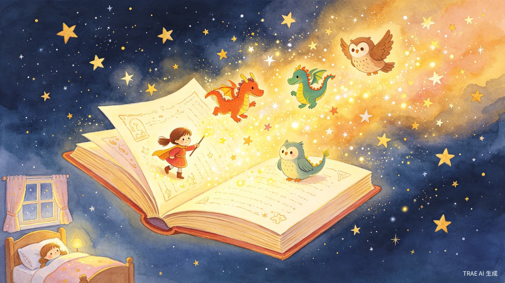
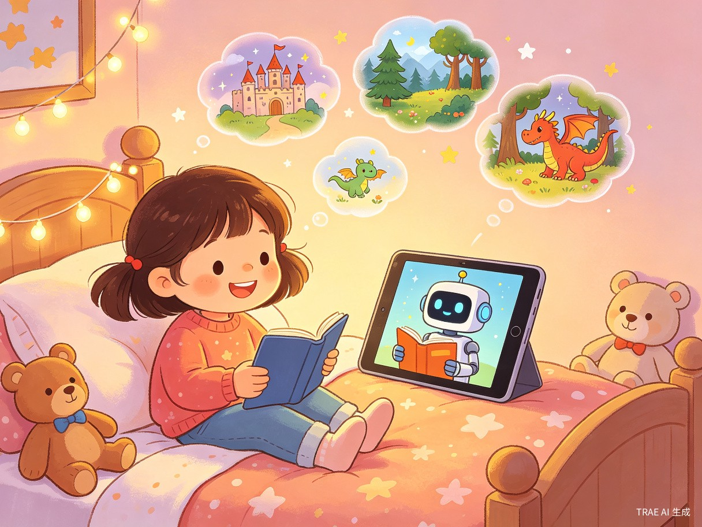
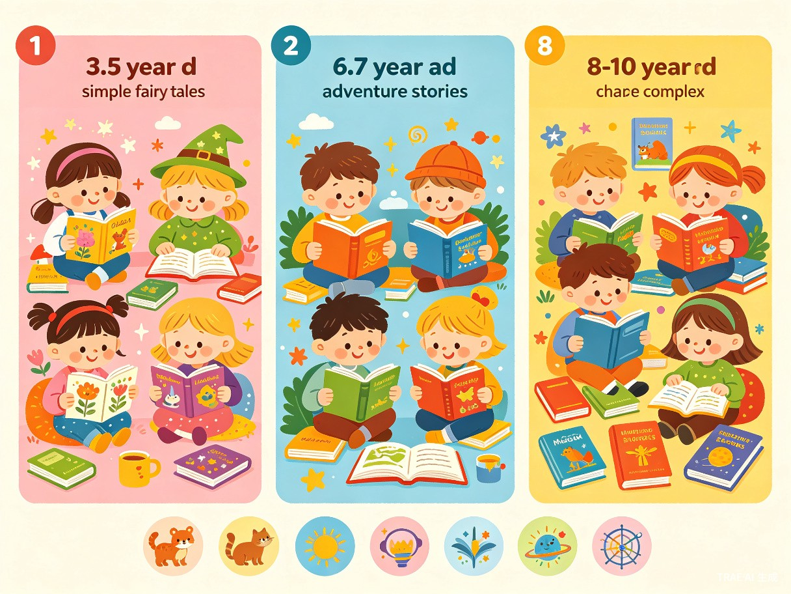

为每个孩子量身定制的智能故事伙伴
"妈妈，我想听一个更危险、更刺激的故事！"
童梦AI故事机（DreamTales AI）
现有AI讲故事工具无法精准匹配孩子的个性化需求，生成的故事情节总是千篇一律、不够刺激或偏离孩子真正想听的内容。家长也难以持续为孩子创作符合年龄、兴趣和文化背景的原创故事。
我的女儿非常喜欢听AI讲故事，但她经常抱怨："故事不够危险！不够刺激！"她希望能听到真正符合自己想象的情节——比如勇敢的小女孩穿越魔法森林、与巨龙成为朋友。这让我意识到，孩子需要的不是标准化的故事，而是一个能听懂他们想法、不断学习和创新的AI故事伙伴。
一款面向3-10岁儿童的AI智能故事生成微信小程序，无需下载安装，微信扫码或搜索即可随时进入使用。支持纯语音交互、个性化故事定制、多年龄段适配，融合中外经典故事语料库与AI原创能力。依托小程序生态实现即开即用，完美匹配儿童睡前、乘车等碎片化场景。

直接用户：3-10岁儿童，对故事有强烈兴趣，渴望冒险、刺激和个性化内容。
间接用户：家长（80后、90后父母），希望为孩子提供优质、安全、有教育意义的故事内容。
每晚睡前，孩子通过语音告诉AI今天想听什么类型的故事，AI即时生成并语音播报。
孩子可以自由发挥想象力，指定主角、场景、情节走向，AI据此创作专属冒险。
家长与孩子一起参与故事创作，增进亲子互动，共同探索故事世界。
乘车、等待等碎片时间，孩子可以随时打开应用，获得有趣的故事陪伴。
情节模板化严重，无法根据孩子的实时反馈调整；缺乏分年龄段的内容适配；无法融合中外经典故事元素；不能记住孩子的偏好进行持续优化。
家长没有足够时间和创意持续为孩子编新故事；难以判断内容是否适合孩子年龄；希望故事既有娱乐性又有教育意义。

| 年龄段 | 内容特点 | 故事类型 | 互动方式 |
|---|---|---|---|
| 3-5岁 | 简单情节、重复结构、正向价值观 | 动物童话、生活启蒙、情绪认知 | 语音选择、简单问答 |
| 6-7岁 | 冒险元素、友情主题、轻度挑战 | 魔法冒险、校园故事、科普探索 | 情节分支选择、角色定制 |
| 8-10岁 | 复杂剧情、多线叙事、深度主题 | 史诗冒险、悬疑推理、历史穿越 | 开放式创作、故事续写 |
系统内置丰富的经典故事语料库，AI在创作时能够自然融合这些文化元素：
AI不是简单复述，而是将经典故事的价值观、角色原型、情节模式融入全新的原创故事中，让孩子在冒险中自然接触中外文化精髓。
"妈妈，我想听一个更危险的故事！要有巨龙和悬崖！" —— 这是来自真实用户（我女儿）的需求。
产品提供"刺激度"滑动条，家长可设置安全范围，孩子在范围内自由调节：
温馨治愈，无冲突情节，适合睡前安抚情绪。
轻度挑战与探索，培养勇气与解决问题能力。
紧张情节、危险场景（家长可控），满足孩子对"危险故事"的渴望。
系统通过以下机制实现越用越懂孩子：
产品主界面是一个可爱的AI故事伙伴形象（小精灵/小动物），孩子只需点击它身上的按钮，就可以直接说话描述想要的故事。AI理解后即时创作，全程无需打字、无需复杂操作，3岁孩子也能独立使用。支持纯语音模式——孩子可以闭上眼睛，全程通过语音交互，不需要盯着屏幕。
点击角色身上的按钮即可说话，AI实时理解孩子的想法并生成故事。
主界面是一个可爱的AI伙伴，孩子一看就懂，操作零门槛。
为每个故事生成配套插画，增强沉浸感，帮助孩子理解情节。
根据故事场景自动匹配背景音乐和音效（森林鸟鸣、城堡钟声等）。
家长无需再为"今晚讲什么故事"发愁，AI即时生成无限量的个性化内容，节省家长时间与精力。
传统故事书内容固定，而AI能根据孩子当下的兴趣和情绪状态，实时调整故事内容，匹配效率提升数十倍。
文化传承：将中外经典故事以孩子喜欢的方式重新演绎，让传统文化在数字时代焕发新生。
创造力培养：鼓励孩子参与故事创作，激发想象力与表达能力，而非被动接受内容。
情感陪伴：为忙碌家庭的孩子们提供一个随时在线的"故事朋友"，填补陪伴空白。
阅读启蒙：通过有趣的语音故事培养孩子的语言能力和阅读兴趣，为未来学习打下基础。
健康使用：支持纯语音模式，孩子可闭眼听故事；内置使用时长提醒、护眼模式，帮助家长科学管理屏幕时间。
区别于现有固定模板的AI故事产品，童梦AI故事机让孩子成为故事的导演而非被动的听众。孩子说出想法，AI实时理解并创作专属故事，每一次体验都是独一无二的。
孩子说想法，AI来执行，每个故事都围绕孩子的兴趣和思路生成。
AI记住每个孩子的偏好，故事越来越贴合孩子的口味。
伊索寓言、格林童话、孟母三迁等经典元素自然融入原创故事。
可爱角色+语音按钮，3岁孩子也能独立使用，无需家长辅助。
让每一个孩子都能听到"为自己而生"的故事，在想象的海洋中自由航行，同时汲取中外文化的智慧与力量。
未来，童梦AI故事机将不仅是一个讲故事工具，更是孩子的创意伙伴、文化向导和成长记录者。我们期待见证无数孩子在这个平台上，从听众成长为创作者，编织属于自己的梦想世界。